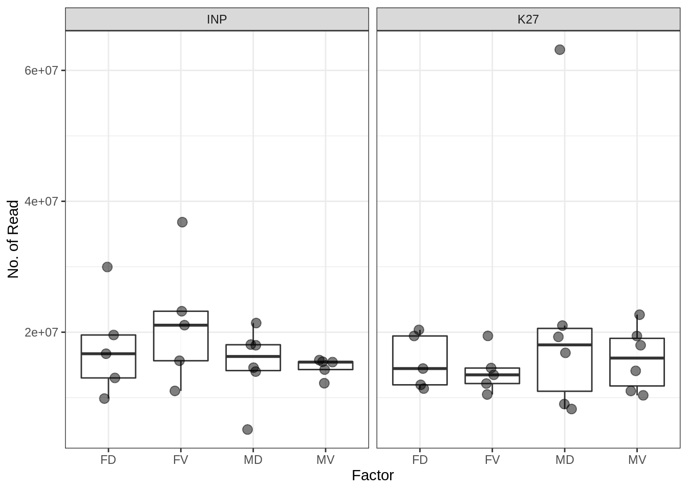
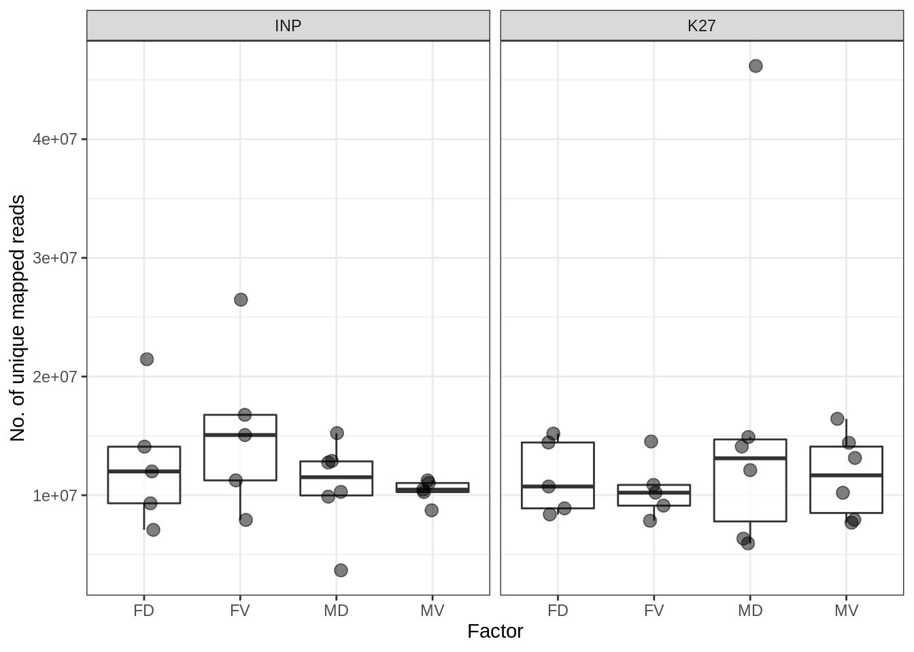
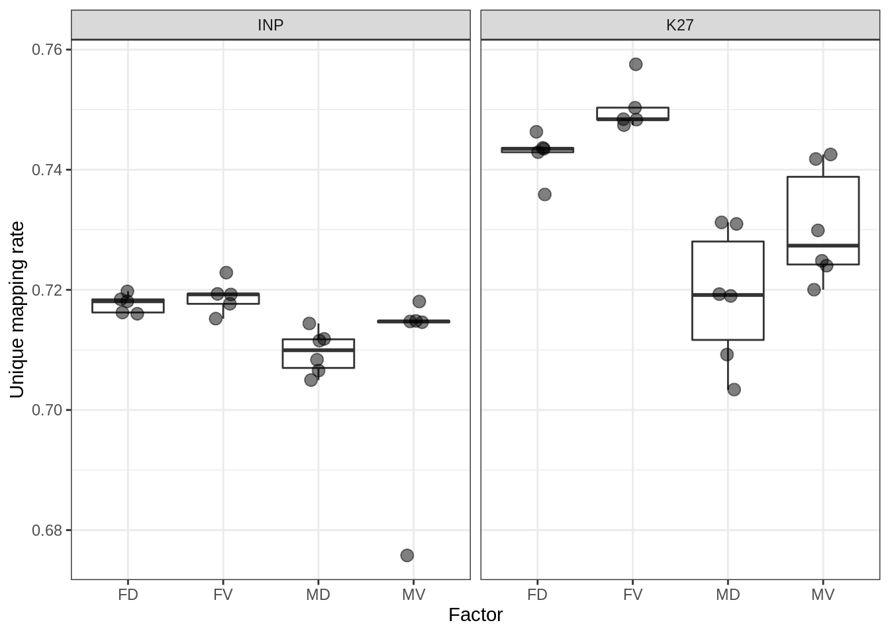
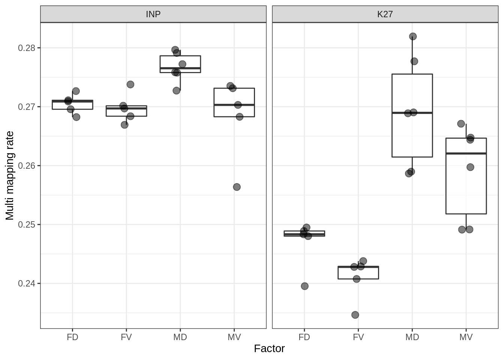
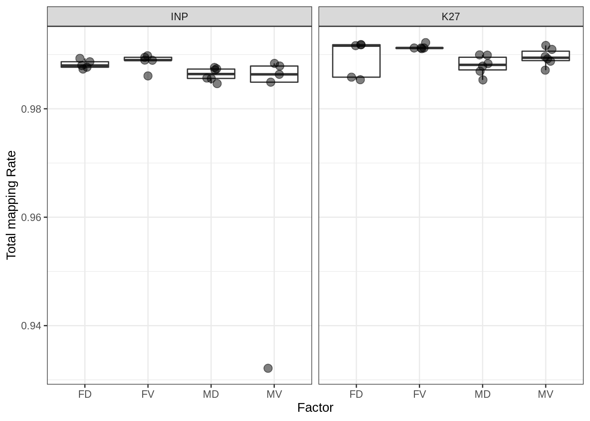

2 Mapping
Mapper: bowtie2
2.1 Table of mapping statistic
- NB, only uniqely mapped reads (i.e. excluding multi-mapped reads) were used in further analysis
- NB, one sample (M3V-INP) removed from the analysis
2.2 Boxplots of mapping staststic
2.2.1 No. of sequencing reads

Figure 2.1: No. of reads
2.2.2 No. of uniquely mapped reads

Figure 2.2: No. of unique mapped reads
2.2.3 Unique mapping rate

Figure 2.3: Unique mapping rate
2.2.4 Multi mapping rate

Figure 2.4: Multi mapping rate
2.2.5 Total mapping rate

Figure 2.5: Total mapping rate